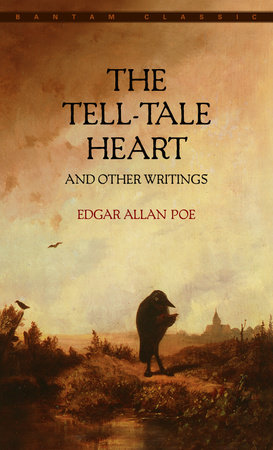
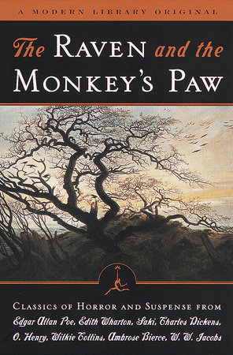
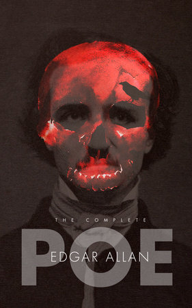

19 Jan 1809
-
7 Oct 1849
Edgar Allan Poe
Edgar Allan Poe, (born January 19, 1809, Boston, Massachusetts, U.S.—died October 7, 1849, Baltimore, Maryland), American short-story writer, poet, critic, and editor who is famous for his cultivation of mystery and the macabre. His tale “The Murders in the Rue Morgue” (1841) initiated the modern detective story, and the atmosphere in his tales of horror is unrivaled in American fiction. His “The Raven” (1845) numbers among the best-known poems in the national literature.
Books

The Tell-Tale Heart

The Raven and the Monkey's Paw

The Complete Edgar Allan Poe